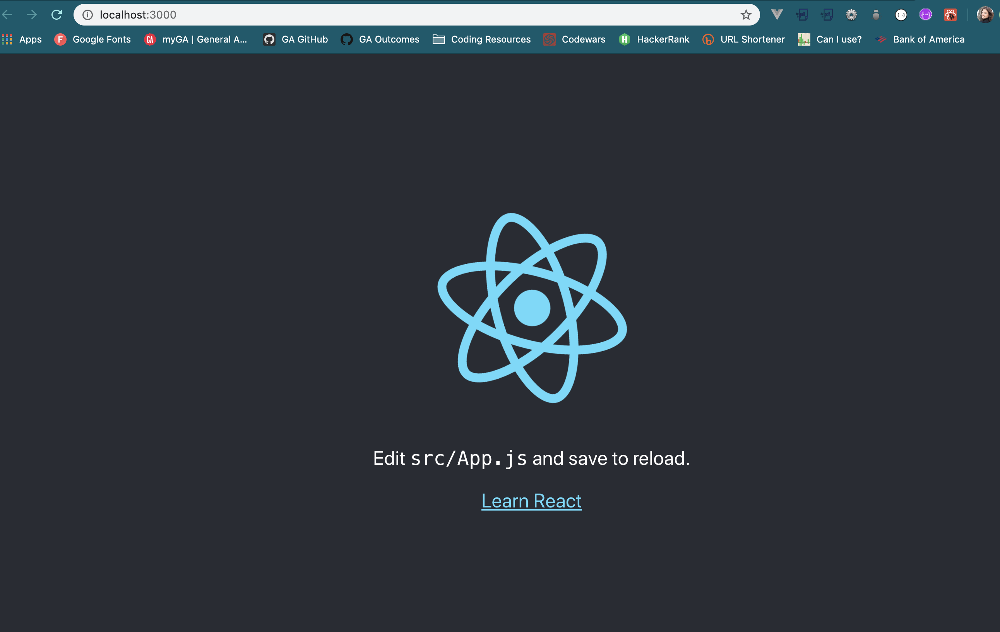
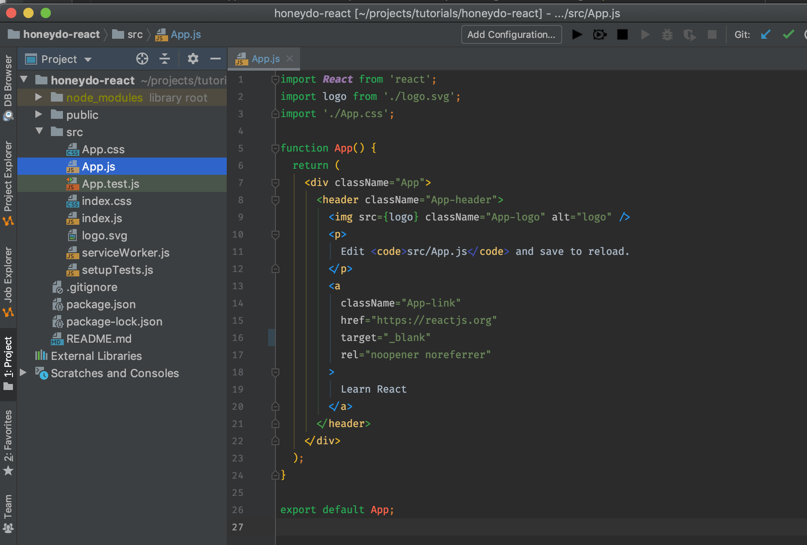
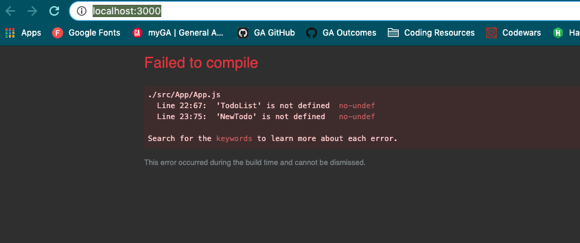
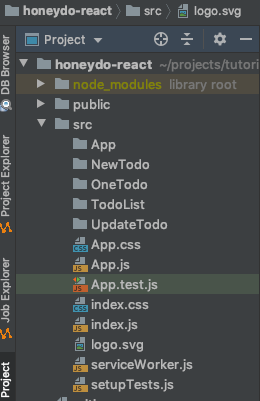
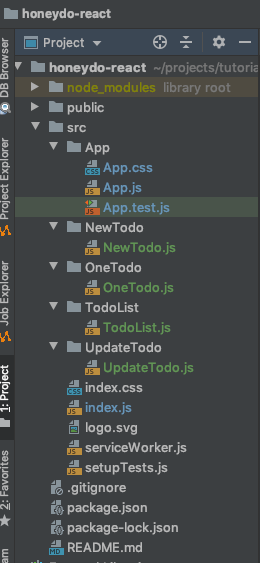

Working with react in this tutorial makes some assumptions about pre-requisite comfort with the development of websites in general:
- You know how to connect to files root directories and make new files within that structure
- You have a working knowledge of terminal commands
- You have a grasp of react syntax and some experience using the language
- You have some experience with props and state
- You are comfortable with basic CSS and HTML and have working knowledge of JavaScript functions
- You can troubleshoot and debug if issues come up as you work through the tutorial steps
- You have set up a database that will handle the CRUD features
If you don't have the database set up, I recommend my Django Tutorial which will give you a Python/Django/PostgreSQL rest framework to pull from.
For react applications, we will start by creating a react app from the terminal. This will auto install all of the required directories as you initialize the project. It is also possible to do this step manually. You are also welcome to substitute any name for your application after 'app' just remember it must be lowercase.
$ npx create-react-app honeydo-react
I prefer to begin in a folder already designated for my application, but you can also run
these commands globally by inserting -g between the 'i' and 'create'. You can also complete this in two steps by using the following
code:
$ npm i -g create-react-app $ create-react-app honeydo-react
Another dependency that will help with loading individual components is a react router, so install that now.
$ npm i react-router-dom
Open the project in your text editor and navigate to the index.js file. Inside you will want
to add an additional import around line 6:
import { BrowserRouter as Router } from 'react-router-dom';
Then add this Router to the ReactDom.render so everything we add from the components into the App.js file will display in the browser.
ReactDOM.render(
<Router>
<App />
</Router>,
document.getElementById('root'));I like using Axios to make CRUD calls to the database from React so let's import that dependency now.
$ npm i axios
You will also want to connect this repo to GitHub, so create a new repository on GitHub and if you need help, don't initialize with a README.md. The repo will give you directions to follow for linking to your react application. Once connected, you can check the current application build in your localhost by running the following:
$ npm run start
This should give you the following screen in your browser
Let's remove all the react information built in so we can start building the application. Go into your
'src' directory and find the 'App.js' file.
/src/App.js
You will see the following code:
I am going to refactor the React Hook into React Classes for the purposes of this tutorial. Delete the
contents of the App.js file and add the following code instead:
import React, { Component } from 'react';
import './App.css';
export default class App extends Component {
render() {
return (
<div className="App">
<header className="App-header">
<h1>
Welcome to HoneyDo.
</h1>
</header>
</div>
)
}
}Let's break down what we just did. In order to use react components, you must import them into each component page. The second import will pull in the CSS file already set up when you initialized the application. (We will eventually be updating this to reflect the CSS from the HoneyDo Django application, but for now leave it.) In order to view any component, you must export the content. My preference is to include that in the extension of the Component itself so I don't forget, but you can also add it to the bottom of the code like this:
export default App;
The render piece is currently empty, but the return is what will allow the JSX (React's built in
JavaScript that functions like HTML) code to display on the page. Right now it is simply a welcome message, and as long as the react server is running from the terminal
($ npm run start) you can return to localhost to view
the
updated page.
Since this file will function as our 'landing' page for the whole application, let's also add some navigation. Keep in mind that everything added to this component will be displayed on every page. To add the react counterpart to the '<a>' tag, we need to add the following code on line 2:
import {Route, Link, Switch} from 'react-router-dom';
Route tells the browser where to go, Switch picks which component to display depending on the path, and Link is the way to get there. The general rule for using 'Link' instead of '<a>' is if the browser is loading something component based, use Link. My navigation will link to my website as well as internal components, so it may look slightly different for you. The two important pieces are 'Lists' and 'New HoneyDo' which will be component based. Inside the header, add the navigation:
<nav>
<a href="https://spiano.dev"> Home </a>
<Link to="/"> Lists </Link>
<Link to="/todo/new"> New HoneyDo </Link>
</nav>Now you want to set up the return to reflect some typical HTML tags. My preference is to place the navigation inside the header, make a main tag, and put the Routes within a div tag inside the main tag. So, let's move that <h1> tag into a main or body tag and add the Routes under it.
<main>
<h1>
Welcome to HoneyDo.
</h1>
<div>
<Switch>
<Route path="/" exact={true} component={TodoList} />
<Route path="/todo/new" exact={true} component={NewTodo} />
</Switch>
</div>
</main>You will notice an error from your text editor since there isn't any code in the TodoList or NewTodo file yet. A visit to localhost will confirm this error.
For now, comment the Route paths out so you can render the navigation in the localhost. You may also wish
to delete the CSS in the src/App/App.css file to make all changes easier to see.
I find keeping a clear filing system within my projects helps me stay organized. That said, for such a small project, this file structure isn't necessary. However, for the purposes of future development or more complicated applications, following this practice is recommended. Since we already know the desired 'views' we can create directories and files for each of the CRUD pieces:
First create the following directories in the src folder:
App NewTodo OneTodo TodoList UpdateTodo
The filing structure should look something like this:
Next, move all the 'App' files into the new src/App directory. (You may notice your text
editor automatically updates the index.js file to reflect this new path.) Now, inside each
remaining directory, add a corresponding JavaScript file. For example:
src/NewTodo/NewTodo.js
The end result is a filing system that is organized by each individual component.
Assuming you have a database already established, you need to be sure the contents are in JSON format so passing data back and forth between React and the database is formatted correctly. Essentially, you are transforming the existing database into an API. If you followed my Django Tutorial, you can set up a rest framework for the HoneyDo database in your existing backend project after completing the 'Using Django Admin' portion of the tutorial. Open the backend project in your text editor, and cd into the project from the terminal. Install the Django Rest Framework to the existing program by running the following command in the terminal:
$ pipenv install djangorestframework
Now navigate into the settings.py in the project directory. Add 'rest_framework
', to the list of INSTALLED_APPS and add the following code under the MIDDLEWARE chunk of code
(around line 55):
REST_FRAMEWORK = {
'DEFAULT_PERMISSION_CLASSES': [
'rest_framework.permissions.AllowAny',
]
} Since we have already built out a viewable front end for the existing database, you will need to create
new paths for accessing just the rest framework JSON data. Open the view paths to the urls.py in the application directory (in my case:
honeDo_app/urls.py), and add these paths to the urlpattersn:
path('api/', views.TodoList.as_view(), name = 'todo_list'),
path('api/todo/<int:pk>', views.TodoDetail.as_view(),
name = 'todo_detail'),
path('api/todo/new', views.TodoDetail.as_view(),
name = 'todo_create'),
path('api/item/new', views.ItemDetail.as_view(),
name = 'item_create'),
path('api/item/<int:pk>/update', views.ItemDetail.as_view(),
name = 'item_update'),
path('api/item/<int:pk>/delete', views.ItemDetail.as_view(),
name = 'item_delete'),
path('api/todo/<int:pk>/delete', views.TodoDetail.as_view(),
name = 'todo_delete'),Next we need to create serializers to handle the JSON data from our API. Create a serializers.py
file in the application directory. Inside that empty file, add the following code:
from rest_framework import serializers
from .models import Todo, Item
class TodoSerializer(serializers.HyperlinkedModelSerializer):
todo_url = serializers.ModelSerializer.serializer_url_field(
view_name = 'todo_detail'
)
class Meta:
model = Todo
fields = ['id', 'title', 'date', 'person', 'todo_url',]
class ItemSerializer(serializers.ModelSerializer):
class Meta:
model = Item
fields = ['id', 'task', 'todo',]These serializers look almost identical to the models and since the fields include 'id' that
automatically added piece will also be accessible which is important when working with CRUD features
from the React side. The url will allow the detail item to be a clickable link inside the rest framework
The next step adds to the views.py file in the application directory.
We have already imported the models, but add the following two imports on lines 4 & 5:
from rest_framework import generics from .serializers import TodoSerializer, ItemSerializer
Since the serializer uses classes, we will add them to the top of the page directly under the imports. You may also add them after the def methods if you prefer. We need three classes: one for all the Todo Lists, one for the detail of each Todo, and one for the detail of each Item in the Todo list.
class TodoList(generics.ListCreateAPIView):
queryset = Todo.objects.all()
serializer_class = TodoSerializer
class TodoDetail(generics.RetrieveUpdateDestroyAPIView):
queryset = Todo.objects.all()
serializer_class = TodoSerializer
class ItemDetail(generics.RetrieveUpdateDestroyAPIView):
queryset = Item.objects.all()
serializer_class = ItemSerializerNow check to see if that works by opening your environment in the terminal
$ pipenv shell
Then run the localhost server
$ python manage.py runserver
As long as the server starts without errors, you can navigate to the localhost:8000 '/api' extensions to view the data in JSON format.

Be sure to push these changes to both your GitHub and Heroku since the Axios calls in this tutorial will go to the deployed version of the database.